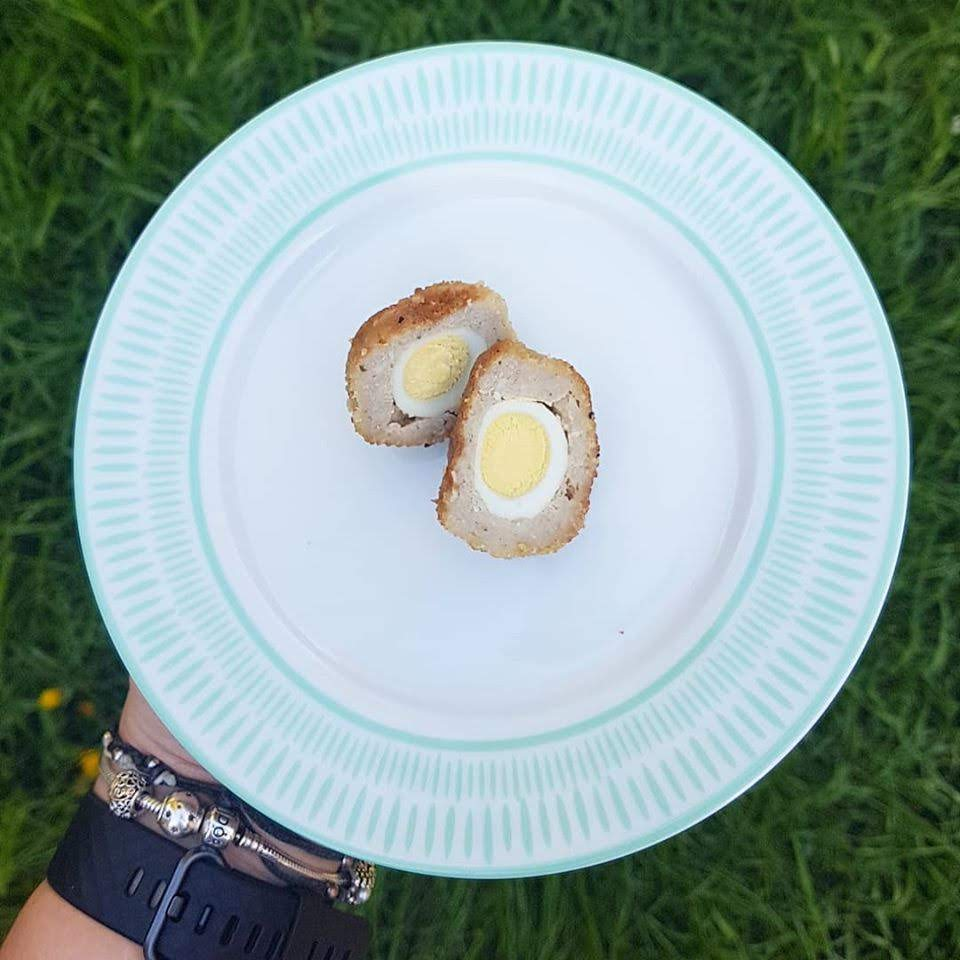

Quail Scotch Egg
11/02/2020 | Recipes

Jamie Oliver’s great alternative to the classic scotch egg made with quail eggs from The Quail
Garden. Great for picnics, parties and events!
Ingreidients
- 12 quail eggs
- 3 thick higher-welfare sausages
- 2 sprigs of fresh thyme
- 1 large free-range egg
- 100 g breadcrumbs
- vegetable oil , for frying
Method
- Preheat the oven to 180ºC/gas 4.
- Cook the eggs in boiling water for 2 minutes, then plunge into cold water and carefully peel.
- Squeeze the sausage meat into a bowl, discarding the skins, then pick in the thyme.
- Beat the hen's egg in a shallow bowl, and place the breadcrumbs into another bowl.
-
Divide the sausage mixture into 12 pieces, then shape around the eggs and carefully roll into a round.
- Roll each round in the beaten egg, then the breadcrumbs until fully coated.
- Very carefully heat 5cm of oil in a deep pan to 180ºC and very carefully fry the scotch eggs in batches for 1 to 2 minutes, or until golden.
- Remove with caution and drain on kitchen paper, bake in oven for 5 minutes, then serve.
Need eggs for this recipe?